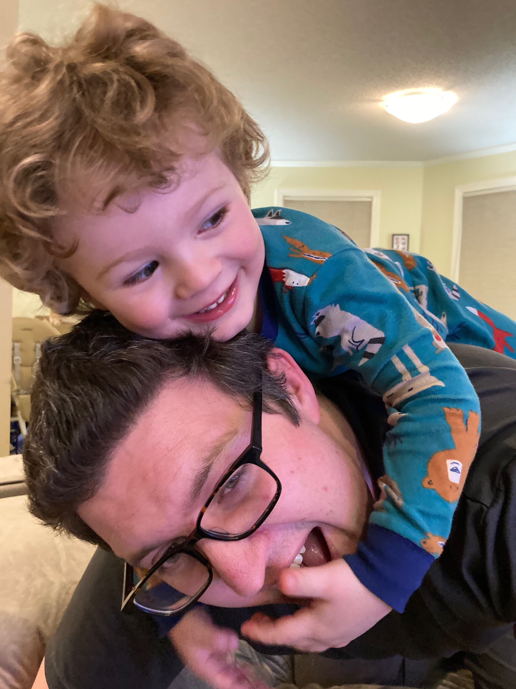

- current teaching: Fundamentals of Mathematics
- office: Innovation E439
- office hours: Friday, 9:30--10:30
seminar pages
- QVNTS (Quebec-Vermont Number Theory Seminar, meets bi-weekly at McGill and Concordia)
- unQVNTS (Our local Arithmetic Geometry seminar, meeting during QVNTS off weeks)
- Algebraic Geometry Learning Seminar
information for students
- Asking for a letter of recommendation?
- Advice for studying Arithmetic Geometry: Emerton's Comment on Terry Tao's Blog
about me
I am currently an Assistant Professor at the University of Vermont. Before that I was a post-doc of Ehud Hrushovski. Before that a student of Alexandru Buium. My manuscripts tend to revolve around the following themes:- Diophantine Equations
- Differential Algebraic Geometry
- Deformation Theory
- Witt Vectors , the Frobenius , and Wittferentiation
- Absolute Geometry
- Applied Model Theory
- Abelian Varieties
old news
- Arithmetic Geometry, AMS Western Sectional, Albuquerque, 2021
- Witt Vectors, Deformations and Absolute Geometry, Burlington, Summer 2018
- Super QVNTS workshop on Anabelian Geometry and Kummer Classes, Burlington, Fall 2016
- Special Session on Differential and Functional Equations, JMMs, Atlanta, 2016
- Arithmetic and Algebraic Differentiation, Berkeley, Summer 2015
- Arithmetic and Differential Algebraic Geometry, AMS Western Sectional, Albuquerque, 2014
- Witt Vectors, Lifting and Descent, JMMs, San Diego, 2014 --- (Slides)
- Visited MSRI. Program: Model Theory, Arithmetic Geometry and Number Theory, Spring 2014
 Supported by the National Science Foundation DMS-2401570.
Supported by the National Science Foundation DMS-2401570. Opinions, findings, and conclusions or recommendations expressed are those of the author(s) and do not necessarily reflect the views of the National Science Foundation or University of Vermont.